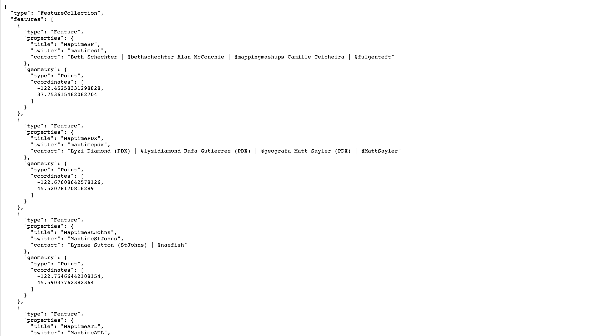
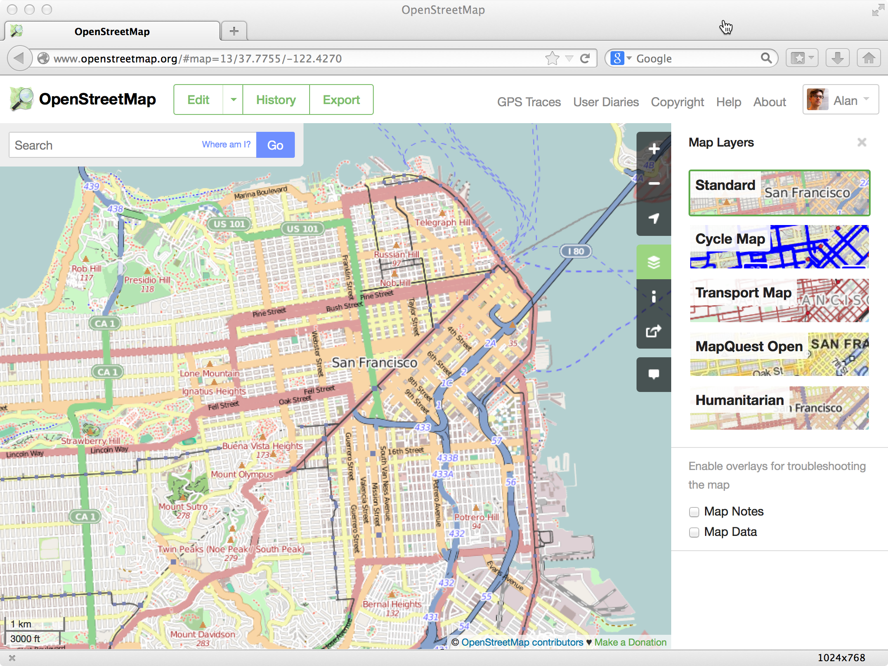

An overview of open source geo tools! by will skora
This is not everything !
GeoJSON features need a type, geometry, and properties.
no rasters, topology, not great on space
used for web maps and small data sets (<1500)

one file
geojson.io
geojson.io exports to SHP, (and CSV) oh my!
instantly shareable
and get $10 (Lorain, Summit, Medina!)
uh-oh, all these new formats and tools?
but there's qgis!
available for Mac/Windows/Linux
projection? no problem
But the Earth is not a sphere. It is its own fancy shape
OpenStreetMap like wikipedia, but for google maps
liberal license; allows

used by businesses/orgs: foursquare, craigslist, flickr, and more
your updates > available to world in minutes
awesome examples of it in action
the philly downtown parking map
How do I get those purdy tiles?!
mapbox
mapbox.js / leaflet
How can I use them?!
postGISSQL with geo.
used internally by Cleveland Metroparks
Open Trails
emerging open data specification for trails
designed with OpenStreetMap in mind!
rch will yield so much more.
Want to learn more and participate!? Join #maptime!
Thanks!
Open Geo Cleveland is on Twitter at
@opengeocle Holler at us!